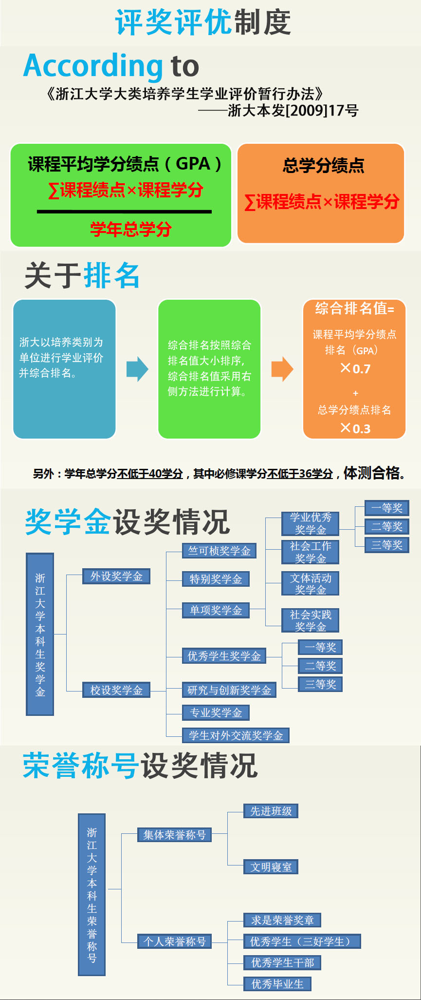

一、奖学金
除优秀学生奖学金根据该学年学业GPA、德育（通过自评、同学互评、班主任评价意见产生）、体测等自动生成外均需要自己申请。
具体来说，就是通过网站通知（学工、学院/学园、对外交流等），找到自己想要申请的奖学金后根据通知流程走。一般需要填表面试。
要申请的同学需要多加关注系网或者学园网站的信息。同样，要申请的同学需要多加关注系网或者学园网站的信息。

二、助学金
助学金也是自己申请的。根据所在学院/学园网站的通知指示，填表。
NSEP、勤工助学岗位、外设奖学金（外设奖学金大多比校内的多）一般多对经济困难生有一定的优先考虑。